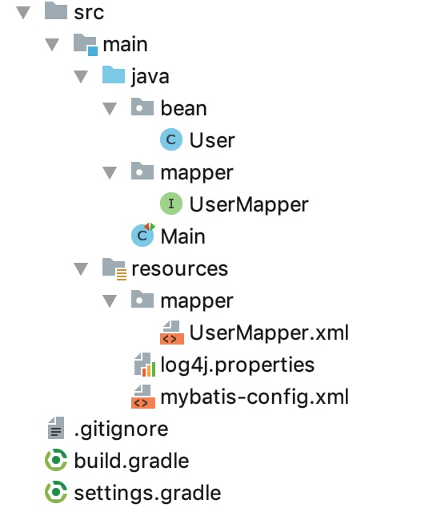

08. 排序
本节示例代码在 mybatis-demo-007 。
数据准备
见 01. 数据准备。
项目结构

UserMapper 接口
内容如下：
package mapper;
import bean.User;
import org.apache.ibatis.annotations.Param;
import java.util.List;
public interface UserMapper {
/**
* 根据密码查询所有用户
* @param password
* @return
*/
List<User> findByPassword(@Param("password") String password, @Param("orderClause") String orderClause);
}
findByPassword 函数的第2参数用于排序。
UserMapper.xml 映射
<?xml version="1.0" encoding="UTF-8" ?>
<!DOCTYPE mapper PUBLIC
"-//mybatis.org//DTD Mapper 3.0//EN"
"http://mybatis.org/dtd/mybatis-3-mapper.dtd">
<mapper namespace="mapper.UserMapper">
<select id="findByPassword" resultType="bean.User">
select
* from blog_db.user where password=#{password} order by ${orderClause}
</select>
</mapper>
为什么 password 用 #{} 包含，而orderClause 用${} ?
简单来说， #{}用来表示数据，${}用来填充SQL。因为 #{} 会导致 MyBatis 创建 PreparedStatement 参数并安全地设置参数，而${}是简单的替换。
运行
我们在 Main 类中写两个示例：
import java.io.IOException;
import java.util.Iterator;
import java.util.List;
import lombok.extern.slf4j.Slf4j;
import org.apache.ibatis.io.Resources;
import org.apache.ibatis.session.SqlSession;
import org.apache.ibatis.session.SqlSessionFactory;
import org.apache.ibatis.session.SqlSessionFactoryBuilder;
import bean.User;
import mapper.UserMapper;
import org.junit.Test;
@Slf4j
public class Main {
@Test
public void test_01() throws IOException {
SqlSession sqlSession = getSqlSession();
UserMapper userMapper = sqlSession.getMapper(UserMapper.class);
List<User> userList = userMapper.findByPassword("123", "id asc");
log.info("{}", userList);
}
@Test
public void test_02() throws IOException {
SqlSession sqlSession = getSqlSession();
UserMapper userMapper = sqlSession.getMapper(UserMapper.class);
List<User> userList = userMapper.findByPassword("123", "id desc");
log.info("{}", userList);
}
private SqlSession getSqlSession() throws IOException {
SqlSessionFactory sessionFactory;
sessionFactory = new SqlSessionFactoryBuilder()
.build(Resources.getResourceAsReader("mybatis-config.xml"));
return sessionFactory.openSession();
}
}
test_01 示例是查询密码为 123 的所有用户，并按照id升序返回结果。运行结果如下：
INFO [main] - [User(id=1, name=letian, email=letian@111.com, password=123), User(id=2, name=xiaosi, email=xiaosi@111.com, password=123)]
test_02 示例是查询密码为 123 的所有用户，并按照id降序返回结果。运行结果如下：
INFO [main] - [User(id=2, name=xiaosi, email=xiaosi@111.com, password=123), User(id=1, name=letian, email=letian@111.com, password=123)]